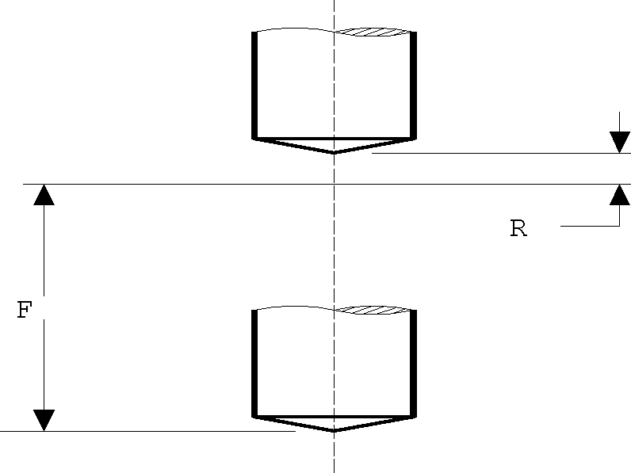
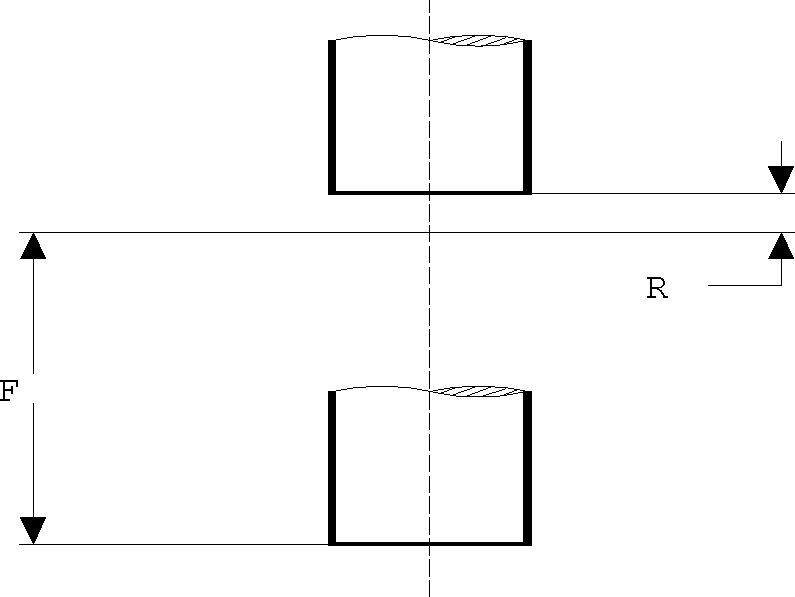
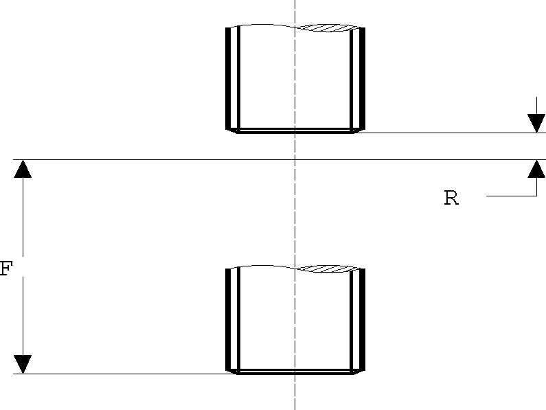
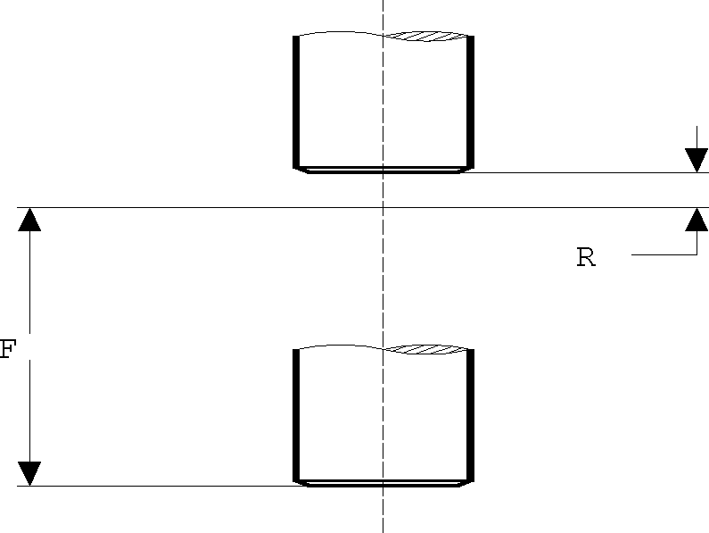
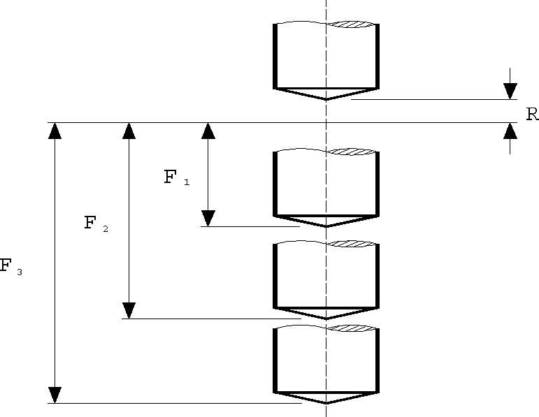
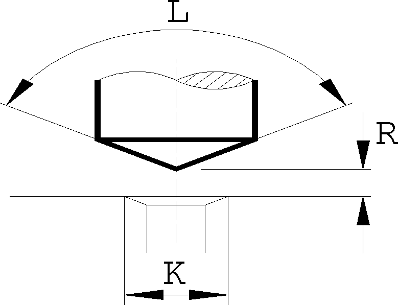

The CYCLE Command [ML]
The CYCLE command is used to perform drilling, tapping and boring operations. These operations can be performed automatically by some machine controls using the ISO 1056 G81-G89 cycle codes. If your machine does not have this capability, GENER can emulate cycles using point-to-point motions if desired. This command is valid for lathes and milling machines having a Z axis.
The following CYCLE command functions are available:
GENER supports two syntax formats for the CYCLE language. An obsolete ISO 4343:1978 standard format uses fixed position parameters. This format is not documented. The newer ISO 4343:2000 standard format uses “keyword,value” couplets instead of fixed parameters. It is this newer format that is documented here.
The following is a summary of the cycle types and their parameters:
\(\textbf{CYCLE /} \begin{pmatrix}\,\begin{array}{l} \textbf{DRILL} \\ \textbf{FACE} \\ \textbf{TAP} \\ \textbf{BORE} \\ \textbf{BORE},\textbf{BACK} \\ \textbf{REAM} \end{array}\end{pmatrix} \, \mathtt{,<\!depth\!>} \, \mathtt{,<\!feed\!>} \, \big[ \mathtt{,<\!clear\!>} \big] \, \big[ \mathtt{,<\!options\!>} \big]\)
\(\textbf{CYCLE / } \begin{bmatrix}\,\begin{array}{l} \textbf{DRILL} \\ \textbf{TAP} \end{array}\,\end{bmatrix} , \begin{pmatrix}\begin{array}{l} \textbf{DEEP} \\ \textbf{BRKCHP} \end{array}\end{pmatrix} \mathtt{,<\!depth\!>} \, \big[ \mathtt{,<\!steps\&feeds\!>} \big] \, \big[ \mathtt{,<\!clear\!>} \big] \, \big[ \mathtt{,<\!options\!>} \big]\)
\(\textbf{CYCLE / THRU} \mathtt{,<\!depth\!>} \, \mathtt{,<\!step\_data\!>} \, \mathtt{,<\!feed\!>} \, \big[ \mathtt{,<\!clear\!>} \big] \, \big[ \mathtt{,<\!options\!>} \big]\)
\(\textbf{CYCLE / CSINK} \mathtt{,<\!odia\!>} \, \mathtt{,<\!angle\!>} \, \big[ \mathtt{,<\!idia\!>} \big] \, \mathtt{,<\!feed\!>} \, \big[ \mathtt{,<\!clear\!>} \big] \, \big[ \mathtt{,<\!options\!>} \big]\)
\(\textbf{CYCLE / MANUAL} \, \mathtt{,<\!clear\!>}\)
The following is a summary of other cycle control commands:
\(\textbf{CYCLE / ON } \big[ \mathtt{,<\!parameters\!>} \big]\)
\(\textbf{CYCLE / } \begin{pmatrix}\begin{array}{l} \textbf{OFF} \\ \textbf{NOMORE} \end{array}\end{pmatrix}\)
\(\textbf{CYCLE / AUTO} \ldots\)
\(\textbf{CYCLE / RETURN} \ldots\)
GENER will treat all motions between the CYCLE/type and CYCLE/OFF (or CYCLE/NOMORE)
commands as the reference points for cycle processing. Cycle dimensions, such as clearance and depth, are defined as signed distances measured along the tool axis relative to these reference points. Note that not all parameters have the same positive sense (e.g., clearance and depth are opposite) and some parameters are unsigned (e.g., stepping distance).
RAPID motions encountered during a cycle are considered to be out-of-cycle avoidance moves. No cycle action will be performed (nor clearance applied) at a RAPID motion point. A RAPID coded before the CYCLE/type command will not affect the first motion point in the cycle (however, a RAPID coded immediately after the CYCLE/type command will affect the first motion).
The cycle in-feed must be specified on the CYCLE/type command. Any FEDRAT rate specification coded during a cycle will be diagnosed with a warning and ignored. The original feed rate in effect before the cycle will be reinstated following the cycle.
CYCLE commands can generally be coded without regard to whether or not the machine provides a corresponding built-in (or canned) cycle. GENER will use built-in cycles where possible and where necessary will emulate a cycle using rapid positioning and linear interpolation motions, or even other available built-in cycles. When emulating a multi-axis cycle plunge or retract along the tool axis, GENER may use high feed interpolation instead of a positioning motion if QUEST settings indicate that the positioning axes move independently (see “$RAPLIN”).
Depending on QUEST specified cycle motion squaring and rotary positioning requirements, GENER may temporarily cancel a cycle in order to properly position the tool above or at the cycle clearance plane.
The CYCLE/ON Command
\(\textbf{CYCLE / ON } \big[ \mathtt{,<\!parameters\!>} \big]\)
The last cycle can be reactivated by coding CYCLE/ON. You may optionally include any cycle parameters that are different from the old cycle, with the following two exceptions:
The cycle type cannot be changed using the CYCLE/ON format.
The CYCLE/ON format cannot be used to remove the effect of options, such as INVERS, that have no reverse representation.
The CYCLE/OFF Command
\(\textbf{CYCLE /} \begin{pmatrix}\begin{array}{l} \textbf{OFF} \\ \textbf{NOMORE} \end{array}\end{pmatrix}\)
A CYCLE/OFF command ends special cycle processing and implies RAPID positioning for the next motion point. This following motion may be segmented depending on QUEST specified cycle motion squaring requirements. A FEDRAT command must be coded following a CYCLE/OFF to feed interpolate to the next motion point.
CYCLE/NOMORE is an alias for CYCLE/OFF.
The CYCLE/AUTO Command
\(\textbf{CYCLE / AUTO}, \begin{pmatrix} \begin{array}{l} \textbf{ON} \\ \textbf{OFF} \end{array}\end{pmatrix}\)
This command controls whether or not built-in cycles should be used by the post-processor. ON is the default, which enables the use of built-in cycles where available. OFF inhibits the use of built-in cycles, which results in all cycles being emulated using rapid positioning and feed interpolation motions. Note that rigid tapping cycles cannot be emulated, so the CYCLE/AUTO state has no effect on these cycles.
The CYCLE/AUTO command can be coded at any time, including when cycle processing is active, to affect the processing of subsequent cycle reference point motions.
The CYCLE/RETURN Command
\(\textbf{CYCLE / RETURN}, \begin{pmatrix} \begin{array}{l} \textbf{ON} \\ \textbf{OFF} \\ \textbf{AUTO} \\ \mathit{value} \end{array}\end{pmatrix}\)
This command provides a means to override the cycle return plane parameter specified on subsequent CYCLE commands (see “Return Height”). This is sometimes necessary due to the lack of control over return plane settings on CAM generated CYCLE commands.
ON specifies that the current tool position at the start of the cycle will be used as the cycle return plane for all cycle points in the cycle, regardless of whether or not a RETURN parameter is specified on the CYCLE/type command.
OFF disables the use of a cycle return plane. The tool position at the end of the cycle point will be the same as the clearance position at the start of the point, regardless of whether or not a RETURN parameter is specified on the CYCLE/type command.
A return plane value can be given to set the cycle return plane the specified distance above the first motion control point of the cycle, regardless of whether or not a RETURN parameter is specified on the CYCLE/type command.
Finally, AUTO can be specified to select the default mode of operation, which is to use the RETURN parameter specified on the CYCLE/type command to define the return plane, if any.
Common Cycle Parameters
All cycles except MANUAL have common parameters. These are the depth of the operation, startup clearance distance and operation feed rate. The MANUAL cycle is a special case, it only requires the clearance value that is specified where one would normally code the depth.
Depth of Operation
The depth of the operation is always required. It is the distance below each point that the operation is to be performed to. A negative depth specifies an end position above the control point, it does not cause a reversed operation. The depth value must always result in a position at or below the cycle clearance plane. The depth is coded as follows:
\(\textbf{DEPTH},\mathit{value}\)
Cutting Feed
All cycles must specify a feed rate. The DEEP and BRKCHP may specify multiple feed rates. The feed rate consists of two parts: the feed type and the feed value. The feed is coded as follows:
\(\boldsymbol{\mathit{type}},\mathit{value}\)
The feed type can be any one of the following (if the machine does not support the feed type selected, GENER will convert the feed value into the units of a type that is supported):
- IPM:
inches per minute
- IPR:
inches per revolution
- MMPM:
millimeters per minute
- MMPR:
millimeters per revolution
- PERMIN:
CL file units per minute
- PERREV:
CL file units per revolution
- TPI:
threads per inch
Clearance Height
The clearance height is the distance above each point that the machine will position to prior to actually performing the requested operation. At the conclusion of the operation, the cutter will be repositioned to this same location. The clearance is coded as follows
\(\textbf{CLEAR} ,\mathit{value} \big[ ,\mathit{value_2} \, \big]\)
If a clearance value is not coded, the last clearance value specified will be used. The default clearance value on the first cycle command is the value answered in QUEST in the “General Cycle Information” topic of the “Automated Canned Cycles” section. A negative clearance specifies a start position below the control point, it does not cause a reversed operation. The clearance value must always result in a position at or above the cycle depth (or first cycle step).
For BORE, DEEP, BRKCHP and THRU cycles, a second clearance value can also be specified, which is applied to intermediate positions during the cycle. The ways in which secondary clearances are applied are different between cycle types. They are explained in more detail under the individual cycle descriptions.
Common Cycle Options
The following options can be applied to any cycle type excluding the MANUAL cycle.
Return Height
\(\textbf{RETURN } \big[ ,\mathit{value} \, \big]\)
The RETURN option specifies a single clearance plane for all points in the cycle. The tool tip will move to this plane regardless of the control points and clearance heights for individual points. The RETURN plane will be set by the clearance on the first control point of a CYCLE by specifying RETURN alone. Specifying RETURN with a value will set the clearance plane at a distance above the first control point. In either case, the tool tip will always return to that plane at the end of each cycle move.
If it should happen that a cycle control point is above the RETURN plane, the machine will simply retract to the regular clearance height above the control point. If the next control point is below the RETURN plane, the RETURN plane will again be used as the final clearance height.
Additional Rapid Plunge
\(\textbf{RAPTO} ,\mathit{value}\)
The RAPTO option is used to cause an additional rapid positioning operation at each point in the cycle. This option is used when performing any cycle where an additional move at high speed is desired to move the tool tip from the clearance plane to the start of the hole. For example, RAPTO can be used when performing cycle operations on points that are below the surface of the part and that can be approached at high speed, such as counter-bores.
Normally, the tool tip is positioned to the clearance plane of each point and the cycle feed motion is performed from the clearance plane to the cycle depth. When the RAPTO option is used, the tool tip is positioned to the clearance plane and is then moved at RAPID to a depth specified by the RAPTO value. Only then will the tool start to move at feed. Note that for the BORE-BACK cycle, the RAPTO value is required and is measured from the control point and not the clearance plane.
Dwell
\(\begin{pmatrix} \begin{array}{l} \textbf{DWELL} \\ \textbf{REV} \end{array}\end{pmatrix} ,\mathit{value}\)
The DWELL option is used to cause a programmed wait for a number of seconds when the machine reaches the specified cycle depth. The REV option waits instead for a number of spindle revolutions. When applied to DEEP and BRKCHP cycles, the delay might also occur at each step depth. When applied to DEEP and TAP cycles, the delay might also occur after the tool retracts.
If the machine cycle has a delay capability, the cycle will be output with the appropriate register (unless the delay is a fixed value). When emulating cycles with point-to-point motions, the DELAY command is called internally to perform the dwell. If the machine does not have a delay feature, an error message may occur at each point.
The DRILL Cycle
The DRILL cycle performs a sequence of operations equivalent to the G81 fixed cycle in ISO 1056. This cycle plunges at feed and then retracts at rapid. If a DWELL option is specified, GENER will process the DRILL cycle as a FACE cycle.
The syntax is as follows (common-options are listed here):
\(\textbf{CYCLE / DRILL}, \;\textbf{DEPTH} ,\mathit{depth} \, \begin{pmatrix} \!,\! \begin{array}{l} \textbf{IPM} \\ \textbf{IPR} \\ \textbf{MMPM} \\ \textbf{MMPR} \\ \textbf{PERMIN} \\ \textbf{PERREV} \end{array} \end{pmatrix} \! ,\mathit{feed} \, \; \big[ , \textbf{CLEAR} ,\mathit{clear} \,\big] \; \ldots\)
\(\hspace{.8cm} \ldots \; \big[ ,\mathit{common\_options} \,\big]\)
The DRILL cycle causes the following motions to occur at each non-rapid point within the cycle:
CYCLE/DRILL,DEPTH,f,IPM,feed,CLEAR,r
Position at rapid to r above the control point
Feed to a distance f+r at feed inches/minute
Rapid retract to a position r above the control point

{kind=link}
The FACE Cycle
The FACE cycle performs a sequence of operations equivalent to the G82 fixed cycle in ISO 1056. This cycle plunges at feed, dwells for a specified or default period and then retracts at rapid. If the DWELL common option is not specified then the most recent DWELL from a previous cycle will be used, or if none then the QUEST defined default dwell will be used.
The syntax is as follows (common-options are listed here):
\(\textbf{CYCLE / FACE}, \; \textbf{DEPTH} ,\mathit{depth} \, \begin{pmatrix} \!,\! \begin{array}{l} \textbf{IPM} \\ \textbf{IPR} \\ \textbf{MMPM} \\ \textbf{MMPR} \\ \textbf{PERMIN} \\ \textbf{PERREV} \end{array} \end{pmatrix} \! ,\mathit{feed} \, \; \big[ , \textbf{CLEAR} ,\mathit{clear} \,\big]\)
\(\hspace{.8cm} \ldots \; \big[ ,\mathit{common\_options} \,\big]\)
The FACE cycle causes the following motions to occur at each non-rapid point within the cycle:
CYCLE/FACE,DEPTH,f,IPM,feed,CLEAR,r,DWELL,t
Position at rapid to r above the control point
Feed to a distance f+r at feed inches/minute
Dwell for specified t or default period
Rapid retract to a position r above the control point

{kind=link}
The TAP Cycle
The TAP cycle performs a sequence of operations equivalent to the G84 fixed cycle in ISO 1056. This cycle plunges at feed, optionally dwells, reverses the spindle, retracts at feed and then reverses the spindle again.
The syntax is as follows (common-options are listed here):
\(\textbf{CYCLE / TAP} \begin{bmatrix} ,\! \begin{array}{l} \textbf{FLOAT} \\ \textbf{RIGID} \end{array}\,\end{bmatrix} , \; \textbf{DEPTH} ,\mathit{depth} \, \begin{pmatrix} \!,\! \begin{array}{l} \textbf{IPM} \\ \textbf{IPR} \\ \textbf{MMPM} \\ \textbf{MMPR} \\ \textbf{PERMIN} \\ \textbf{PERREV} \\ \textbf{TPI} \end{array} \end{pmatrix} \! ,\mathit{feed} \, \; \big[ , \textbf{CLEAR} ,\mathit{clear} \,\big] \; \ldots\)
\(\hspace{.8cm} \ldots \; \big[ , \textbf{RATIO} ,\mathit{mult} \,\big] \; \big[ , \textbf{MULTRD} ,\mathit{starts} \,\big] \; \big[ , \textbf{INVERS} \,\big] \begin{bmatrix} ,\! \begin{array}{l} \textbf{NOREVR} \\ \textbf{RAPOUT} \end{array}\,\end{bmatrix} \; \ldots\)
\(\hspace{.8cm} \ldots \; \big[ ,\mathit{common\_options} \,\big]\)
The FLOAT option specifies a tap cycle using a floating tap head. The RIGID option specifies a rigid tap cycle. If neither is specified, then the default tapping cycle type defined in the post-processor will be used.
The RATIO option indicates a velocity multiplier to apply when feed retracting (default is 1).
The MULTRD option indicates (for rigid tapping only) the number of thread starts to generate (default is 1). Multiple starts will cause the cycle to be output multiple times, with a different starting tool orientation if supported, or with an adjusted starting clearance position.
The INVERS option will cause a reverse tapping cycle to be output (i.e., the spindle rotates counter-clockwise on entry and clockwise on exit).
The NOREVR option will cause GENER to process the TAP cycle as a FACE cycle. The RAPOUT option will cause GENER to process the TAP cycle as a DRILL cycle.
The TAP cycle causes the following motions to occur at each non-rapid point within the cycle:
CYCLE/TAP,DEPTH,f,IPR,feed,CLEAR,r
Position at rapid to r above the control point
Feed to a distance f+r at feed inches/revolution
Optionally dwell (if DWELL is specified)
Reverse spindle direction
Feed retract to a position r above the control point
Reinstate initial spindle direction

{kind=link}
The BORE Cycle
The BORE cycle performs a sequence of operations equivalent to the G86 fixed cycle in ISO 1056. This cycle plunges at feed, optionally dwells, stops the spindle, retracts at rapid and then restarts the spindle. If the DWELL common option is specified, the G87 fixed cycle in ISO 1056 is used. If the ORIENT option is specified, the G88 fixed cycle in ISO 1056 is used.
The syntax is as follows (common-options are listed here)
\(\textbf{CYCLE / BORE}, \; \textbf{DEPTH} ,\mathit{depth} \, \begin{pmatrix} \!,\! \begin{array}{l} \textbf{IPM} \\ \textbf{IPR} \\ \textbf{MMPM} \\ \textbf{MMPR} \\ \textbf{PERMIN} \\ \textbf{PERREV} \end{array} \end{pmatrix} \! ,\mathit{feed} \, \; \Big[ , \textbf{CLEAR} ,\mathit{clear} \,\big[ ,\mathit{jog} \,\big] \,\Big] \; \ldots\)
\(\hspace{.8cm} \ldots \; \Big[ , \textbf{ORIENT} \big[ ,\mathit{ang} \,\big] \,\Big] \begin{bmatrix} ,\textbf{OFSETL},\, \begin{array}{l} \mathit{x,y} \\ \mathit{jog} \end{array}\,\end{bmatrix} \; \big[ , \textbf{BACK} ,\!z \,\big] \; \big[ ,\mathit{common\_options} \,\big]\)
The ORIENT option specifies a fine boring cycle. With this cycle type, the tool is oriented to the specified or default angle once the full cycle depth has been reached, then the tool is jogged laterally to disengage the cutting tip from the hole surface before retracting the tool out of the hole. The angle, if specified, must be in degrees, where 0 is the X axis radial. If an angle is not specified, the QUEST default will be used. The jog amount can be specified either as a second CLEAR value or with the OFSETL option. The OFSETL option can alternately specify the x and y components of the jog amount. A QUEST defined jog clearance will be used if a jog value is not defined. Lastly, the tool tip can optionally be jogged along the tool axis using the BACK option.
The BORE cycle causes the following motions to occur at each non-rapid point within the cycle:
CYCLE/BORE,DEPTH,f,IPM,feed,CLEAR,r
Position at rapid to r above the control point
Feed to a distance f+r at feed inches/minute
Optionally dwell (if DWELL is specified)
Stop the spindle direction
Optionally orient the spindle and jog tool tip away from the surface (if ORIENT is specified)
Rapid retract to a position r above the control point
Jog the tool back over the center of the hole (if ORIENT is specified)
Restart the spindle

{kind=link}
The BORE-BACK Cycle
The BORE-BACK cycle performs a sequence of operations equivalent to the G87 fixed back-boring cycle available on some machines. This cycle positions the tool to the upper clearance plane, orients the spindle, positions the tool off center, plunges to a bottom clearance plane, positions the tool back on center, starts the spindle, feeds upwards to the cycle depth plane, optionally dwells, orients the spindle a second time, positions the tool off center, positions to the upper clearance plane, positions the tool back on center, and starts the spindle.
The syntax is as follows (common-options are listed here)
\(\textbf{CYCLE / BORE},\textbf{BACK}, \;\textbf{DEPTH} ,\mathit{depth} \, \begin{pmatrix} \!,\! \begin{array}{l} \textbf{IPM} \\ \textbf{IPR} \\ \textbf{MMPM} \\ \textbf{MMPR} \\ \textbf{PERMIN} \\ \textbf{PERREV} \end{array} \end{pmatrix} \! ,\mathit{feed} \, \; ,\textbf{RAPTO} ,\mathit{bottom} \; \ldots\)
\(\hspace{.8cm} \ldots \; \Big[ , \textbf{CLEAR} ,\mathit{clear} \,\big[ ,\mathit{jog} \,\big] \,\Big] \; \big[ , \textbf{ORIENT} ,\mathit{ang} \,\big] \begin{bmatrix} ,\textbf{OFSETL}, \,\begin{array}{l} \mathit{x,y} \\ \mathit{jog} \end{array}\,\end{bmatrix} \; \ldots\)
\(\hspace{.8cm} \ldots \; \big[ , \textbf{BACK} ,\!z \,\big] \; \big[ ,\mathit{common\_options} \,\big]\)
The RAPTO couplet is required and, unlike with other cycles, it specifies the unsigned distance from the control point (not the upper clearance plane) to the bottom clearance plane.
The cycle orients the tool to a QUEST defined default angle and uses a QUEST defined default jog clearance. These defaults can be changed by coding the ORIENT, OFSETL and BACK options. With this cycle, the tool is oriented to the specified or default angle at the start of the cycle and again once the upward feed motion to the cycle depth has been reached. After orienting, the tool is jogged laterally to disengage the cutting tip from the hole surface before plunging or retracting the tool in or out of the hole. Specify the angle in degrees, where 0 is the X axis radial. The BACK jog z amount is applied after the second orient along the tool axis opposite to the upward feed motion.
The BORE-BACK cycle causes the following to occur at each non-rapid point within the cycle.
CYCLE/BORE,BACK,DEPTH,f,IPM,feed,CLEAR,r,RAPTO,b
Position at rapid to r above the control point
Orient the spindle and jog (-x,-y) tool tip away from the surface
Rapid plunge to b below the control point
Jog (+x,+y) the tool back to the center of the hole
Restart the spindle
Feed upwards to f below the control point at feed inches/minute
Optionally dwell (if DWELL is specified)
Orient the spindle and jog (-x,-y,-z) tool tip away from the surface
Rapid retract to a position r above the control point
Jog (+x,+y) the tool back over the center of the hole
Restart the spindle
The REAM Cycle
The REAM cycle performs a sequence of operations equivalent to the G85 fixed cycle in ISO 1056. This cycle plunges at feed, optionally dwells and then retracts at feed.
The syntax is as follows (common-options are listed here)
\(\textbf{CYCLE / REAM}, \; \textbf{DEPTH} ,\mathit{depth} \, \begin{pmatrix} \!,\! \begin{array}{l} \textbf{IPM} \\ \textbf{IPR} \\ \textbf{MMPM} \\ \textbf{MMPR} \\ \textbf{PERMIN} \\ \textbf{PERREV} \end{array} \end{pmatrix} \! ,\mathit{feed} \, \; \big[ , \textbf{CLEAR} ,\mathit{clear} \,\big] \; \ldots\)
\(\hspace{.8cm} \ldots \; \big[ , \textbf{RATIO} ,\mathit{mult} \,\big] \; \big[ ,\mathit{common\_options} \,\big]\)
The RATIO option indicates a velocity multiplier to apply when feed retracting (default is 1).
The REAM cycle causes the following motions to occur at each non-rapid point within the cycle:
{kind=link}
The DRILL-DEEP Cycle
The DRILL-DEEP cycle performs a sequence of operations equivalent to the G83 fixed cycle in ISO 1056. This cycle plunges at feed, periodically retracting at rapid to clear chips. An optional DWELL if specified will be applied at the full cycle depth as well as (depending on QUEST settings) at each step and/or following each retract.
There are two formats for the DRILL-DEEP cycle (common-options are listed here). For backwards compatibility, the DRILL keyword can be omitted.
Absolute Step Format
The absolute step format of the cycle specifies the individual step depths relative to the control point. The tool will feed to each specified depth, retracting to the clearance plane between feeds.
\(\textbf{CYCLE / DRILL},\textbf{DEEP} \icamrange{5.2}{1}\! \begin{pmatrix} ,\textbf{DEPTH} ,\mathit{depth} \;\icamrange{0.8}{0}\, \big[ ,\mathit{depth} \,\big] \begin{pmatrix} \!,\! \begin{array}{l} \textbf{IPM} \\ \textbf{IPR} \\ \textbf{MMPM} \\ \textbf{MMPR} \\ \textbf{PERMIN} \\ \textbf{PERREV} \end{array} \end{pmatrix} \! ,\mathit{feed} \, \end{pmatrix} \; \ldots\)
\(\hspace{.8cm} \ldots \; \Big[ , \textbf{CLEAR} ,\mathit{clear} \,\big[ ,\mathit{clear_2} \,\big] \,\Big] \; \big[ , \textbf{BACK} ,\mathit{clear_2} \,\big] \; \big[ ,\mathit{common\_options} \,\big]\)
Incremental Step Format
The incremental step format of the cycle specifies both the total cycle depth (i.e., DEPTH,depth) and the individual step depths (i.e., STEP,step) as incremental amounts each measured from the last depth reached. A QUEST defined default step will be used if the STEP amount is not specified. The last specified step is repeated until the final depth is reached. If the DECR option is specified, then the last repeated step value will be reduced by the DECR amount at each peck. A MINSTP specified or fixed minimum step distance will prevent the DECR option from reducing the final peck distance to zero. The cycle will be terminated once the cycle depth is reached, regardless of whether or not all steps have been used.
\(\textbf{CYCLE / DRILL},\textbf{DEEP}, \; \textbf{DEPTH} ,\mathit{depth} \icamrange{5.2}{1}\! \begin{pmatrix} ,\textbf{STEP} ,\mathit{step} \;\icamrange{0.8}{0}\, \big[ ,\mathit{step} \,\big] \begin{pmatrix} \!,\! \begin{array}{l} \textbf{IPM} \\ \textbf{IPR} \\ \textbf{MMPM} \\ \textbf{MMPR} \\ \textbf{PERMIN} \\ \textbf{PERREV} \end{array} \end{pmatrix} \! ,\mathit{feed} \, \end{pmatrix} \; \ldots\)
\(\hspace{.8cm} \ldots \; \Big[ , \textbf{CLEAR} ,\mathit{clear} \,\big[ ,\mathit{clear_2} \,\big] \,\Big] \; \big[ , \textbf{BACK} ,\mathit{clear_2} \,\big] \; \ldots\)
\(\hspace{.8cm} \ldots \; \Big[ , \textbf{DECR} ,\mathit{value} \, \big[ , \textbf{MINSTP} ,\mathit{min} \,\big] \,\Big] \; \big[ ,\mathit{common\_options} \,\big]\)
Parameters
At least one depth and feed must be specified. The feed rate specification applies to all of the depths or step amounts that precede it. The entire group (step amounts and feed rate) can be repeated as many times as required. If multiple feed rates are specified, the cycle will be emulated using point-to-point motions.
The clearance distances are optional. The primary clearance is applied at the start of the cycle as usual. The secondary clearance, which can be specified either as a second CLEAR value or with the BACK option, is used when plunging back into the hole after each full retract.
The DRILL-DEEP cycle causes the following motions to occur at each non-rapid point within the cycle:
CYCLE/DRILL,DEEP,DEPTH,f1,f2,f3,IPM,feed,CLEAR,r,BACK,n
Position at rapid to r above the control point
Feed to a distance f1 below the control point at feed inches/minute
Rapid retract to a position r above the control point
Rapid back down a distance f1–n below the control point
Feed to a distance f2 below the control point
Rapid retract to a position r above the control point
Rapid back down a distance f2–n below the control point
Feed to a distance f3 below the control point
Optionally dwell (if DWELL is specified)
Rapid retract to a position r above the control point

{kind=link}
The following examples illustrate the effects of different options on the DRILL-DEEP cycle syntax.
Example #1
This example shows the automatic repeating feature available when the total depth is specified.
The NC programmer must drill a 3 inch deep hole in steps of 0.5 throughout. The feed rate will remain constant at 0.02 inches per spindle revolution. The clearance distance will be 0.05 at each step. The initial hole clearance will be 0.25 inches.
CYCLE/DRILL,DEEP,DEPTH,3,STEP,.5,IPR,.02,CLEAR,.25,BACK,.05
Example #2
This example shows the automatic repeating feature, the specification of different feed rates at different depths and the use of the DECR option. The clearance height defaults to whatever was specified by the user in QUEST.
The NC programmer must drill a 5 inch deep hole. A stepping distance of 0.5 inches is required until the cutter reaches a depth of 3 inches, thereafter the stepping distance should be reduced by 0.05 inches each peck. The initial feed rate is 10 inches per minute. It should decrease to 8 after a depth of 2.5 inches is reached.
CYCLE/DRILL,DEEP,DEPTH,5,STEP,.5,.5,.5,.5,.5,IPM,10,$ STEP,.5,IPM,8,DECR,.05
The tool will make five pecks of 0.5 inches at a feed rate of 10 IPM. Then, it will make one more peck of 0.5 inches at a feed rate of 8 IPM. Keeping the last feed rate, all subsequent pecks will be decremented by 0.05 inches until a depth of 5 inches is reached.
Example #3
This example shows a deep hole cycle that does not use the depth specification. Again, the default clearance is used.
The NC programmer must drill a 4.5 inch deep hole. The first 2 inches can be handled in steps of 1 inch at 0.02 inches per spindle revolution. The step will decrease by 0.1 thereafter at a feed rate of 4 inches per minute. The final breakthrough of 0.1 inches is done at 1 IPM by protruding the drill point 0.5 inches below the bottom surface.
CYCLE/DRILL,DEEP,DEPTH,1,2,IPR,.02,$ DEPTH,2.9,3.7,4.4,IPM,4,$ DEPTH,5,IPM,1
The TAP-DEEP Cycle
The TAP-DEEP cycle performs a sequence of operations equivalent to the G83 fixed cycle in ISO 1056, but using a rigid tap instead of a drill. This cycle plunges at feed, periodically retracting at the same or higher feed to clear chips. An optional DWELL if specified will be applied at the full cycle depth as well as (depending on QUEST settings) at each step and/or following each retract.
There are two formats for the TAP-DEEP cycle (common-options are listed here)
Absolute Step Format
The absolute step format of the cycle specifies the individual step depths relative to the control point. The tool will feed to each specified depth, retracting to the clearance plane between feeds.
\(\textbf{CYCLE / TAP},\textbf{DEEP}, \; \textbf{DEPTH} ,\mathit{depth} \;\icamrange{0.8}{0}\, \big[ ,\mathit{depth} \,\big] \begin{pmatrix} \!,\! \begin{array}{l} \textbf{IPM} \\ \textbf{IPR} \\ \textbf{MMPM} \\ \textbf{MMPR} \\ \textbf{PERMIN} \\ \textbf{PERREV} \\ \textbf{TPI} \end{array} \end{pmatrix} \! ,\mathit{feed} \; \ldots\)
\(\hspace{.8cm} \ldots \; \Big[ , \textbf{CLEAR} ,\mathit{clear} \,\big[ ,\mathit{clear_2} \,\big] \,\Big] \; \big[ , \textbf{BACK} ,\mathit{clear_2} \,\big] \; \ldots\)
\(\hspace{.8cm} \ldots \; \big[ , \textbf{RATIO} ,\mathit{mult} \,\big] \; \big[ , \textbf{MULTRD} ,\mathit{starts} \,\big] \; \big[ , \textbf{INVERS} \,\big] \; \big[ ,\mathit{common\_options} \,\big]\)
Incremental Step Format
The incremental step format of the cycle specifies both the total cycle depth (i.e., DEPTH,depth) and the individual step depths (i.e., STEP,step) as incremental amounts each measured from the last depth reached. A QUEST defined default step will be used if the STEP amount is not specified. The last specified step is repeated until the final depth is reached. If the DECR option is specified, then the last repeated step value will be reduced by the DECR amount at each peck. A MINSTP specified or fixed minimum step distance will prevent the DECR option from reducing the final peck distance to zero. The cycle will be terminated once the cycle depth is reached, regardless of whether or not all steps have been used.
\(\textbf{CYCLE / TAP},\textbf{DEEP}, \; \textbf{DEPTH} ,\mathit{depth} \; ,\textbf{STEP} ,\mathit{step} \;\icamrange{0.8}{0}\, \big[ ,\mathit{step} \,\big] \begin{pmatrix} \!,\! \begin{array}{l} \textbf{IPM} \\ \textbf{IPR} \\ \textbf{MMPM} \\ \textbf{MMPR} \\ \textbf{PERMIN} \\ \textbf{PERREV} \\ \textbf{TPI} \end{array} \end{pmatrix} \! ,\mathit{feed} \; \ldots\)
\(\hspace{.8cm} \ldots \; \Big[ , \textbf{DECR} ,\mathit{value} \, \big[ , \textbf{MINSTP} ,\mathit{min} \,\big] \,\Big] \; \ldots\)
\(\hspace{.8cm} \ldots \; \Big[ , \textbf{CLEAR} ,\mathit{clear} \big[ ,\mathit{clear_2} \,\big] \,\Big] \; \big[ , \textbf{BACK} ,\mathit{clear_2} \,\big] \; \ldots\)
\(\hspace{.8cm} \ldots \; \big[ , \textbf{RATIO} ,\mathit{mult} \,\big] \; \big[ , \textbf{MULTRD} ,\mathit{starts} \,\big] \; \big[ , \textbf{INVERS} \,\big] \; \big[ ,\mathit{common\_options} \,\big]\)
Parameters
The clearance distances are optional. The primary clearance is applied at the start of the cycle as usual. The secondary clearance, which can be specified either as a second CLEAR value or with the BACK option, is used when plunging back into the hole after each full retract.
The RATIO option indicates a velocity multiplier to apply when feed retracting and plunging to the start of the next step (default is 1).
The MULTRD option indicates the number of thread starts to generate (default is 1). Multiple starts will cause the cycle to be output multiple times, with a different starting tool orientation if supported, or with an adjusted starting clearance position.
The INVERS option will cause a reverse tapping cycle to be output (i.e., the spindle rotates counter-clockwise on entry and clockwise on exit).
See the DRILL-DEEP cycle for examples of usage.
The DRILL-BRKCHP Cycle
The DRILL-BRKCHP cycle performs a sequence of operations equivalent to the G83 fixed cycle in ISO 1056. This cycle plunges at feed, jogging back slightly to break chips and optionally periodically fully retracting to clear chips. An optional DWELL if specified will be applied at the full cycle depth as well as (depending on QUEST settings) at each step and/or following each retract.
There are two formats for the BRKCHP cycle (common-options are listed here). For backwards compatibility, the DRILL keyword can be omitted.
Absolute Step Format
The absolute step format of the cycle specifies the individual step depths relative to the control point. The tool will feed to each specified depth, jogging back slightly to break chips between feeds.
\(\textbf{CYCLE / DRILL},\textbf{BRKCHP} \icamrange{5.2}{1}\! \begin{pmatrix} ,\textbf{DEPTH} ,\mathit{depth} \,\icamrange{0.8}{0}\, \big[ ,\mathit{depth} \,\big] \begin{pmatrix} \!,\! \begin{array}{l} \textbf{IPM} \\ \textbf{IPR} \\ \textbf{MMPM} \\ \textbf{MMPR} \\ \textbf{PERMIN} \\ \textbf{PERREV} \end{array} \end{pmatrix} \! ,\mathit{feed} \, \end{pmatrix} \; \ldots\)
\(\hspace{.8cm} \ldots \; \Big[ , \textbf{CLEAR} ,\mathit{clear} \big[ ,\mathit{jog} \,\big] \,\Big] \; \big[ , \textbf{BACK} ,\mathit{jog} \,\big] \; \big[ , \textbf{TIMES} ,\mathit{count} \,\big] \; \ldots\)
\(\hspace{.8cm} \ldots \; \big[ ,\mathit{common\_options} \,\big]\)
Incremental Step Format
The incremental step format of the cycle specifies both the total cycle depth (i.e., DEPTH,depth) and the individual step depths (i.e., STEP,step) as incremental amounts each measured from the last depth reached. A QUEST defined default step will be used if the STEP amount is not specified. The last specified step is repeated until the final depth is reached. If the DECR option is specified, then the last repeated step value will be reduced by the DECR amount at each peck. A MINSTP specified or fixed minimum step distance will prevent the DECR option from reducing the final peck distance to zero. The cycle will be terminated once the cycle depth is reached, regardless of whether or not all steps have been used.
\(\textbf{CYCLE / DRILL},\textbf{BRKCHP} \; ,\textbf{DEPTH} ,\mathit{depth} \icamrange{5.2}{1}\! \begin{pmatrix} ,\textbf{STEP} ,\mathit{step} \,\icamrange{0.8}{0}\, \big[ ,\mathit{step} \,\big] \begin{pmatrix} \!,\! \begin{array}{l} \textbf{IPM} \\ \textbf{IPR} \\ \textbf{MMPM} \\ \textbf{MMPR} \\ \textbf{PERMIN} \\ \textbf{PERREV} \end{array} \end{pmatrix} \! ,\mathit{feed} \, \end{pmatrix} \; \ldots\)
\(\hspace{.8cm} \ldots \; \Big[ , \textbf{CLEAR} ,\mathit{clear} \big[ ,\mathit{jog} \,\big] \,\Big] \; \big[ , \textbf{BACK} ,\mathit{jog} \,\big] \; \big[ , \textbf{TIMES} ,\mathit{count} \,\big] \; \ldots\)
\(\hspace{.8cm} \ldots \; \Big[ , \textbf{DECR} ,\mathit{value} \, \big[ , \textbf{MINSTP} ,\mathit{min} \,\big] \,\Big] \; \big[ ,\mathit{common\_options} \,\big]\)
Parameters
At least one depth and feed must be specified. The feed rate specification applies to all of the depths or step amounts that precede it. The entire group (step amounts and feed rate) can be repeated as many times as required. If multiple feed rates are specified, the cycle will be emulated using point-to-point motions.
The clearance distances are optional. The primary clearance is applied at the start of the cycle as usual. The jog clearance, which can be specified either as a second CLEAR value or with the BACK option, is used when jogging the tool back slightly to break chips.
The TIMES option can be coded to specify how many pecks should be done between each full retract to the original clearance point. If this option is omitted, the tool will not perform any full retractions. If specified, the cycle will be emulated using point-to-point motions
The BRKCHP cycle causes the following motions to occur at each non-rapid point within the cycle:
{kind=link}
The TAP-BRKCHP Cycle
The TAP-BRKCHP cycle performs a sequence of operations equivalent to the G83 fixed cycle in ISO 1056, but using a rigid tap instead of a drill. This cycle plunges at feed, jogging back slightly to break chips and optionally periodically fully retracting to clear chips. An optional DWELL if specified will be applied at the full cycle depth as well as (depending on QUEST settings) at each step and/or following each retract.
There are two formats for the TAP-BRKCHP cycle (common-options are listed here).
Absolute Step Format
The absolute step format of the cycle specifies the individual step depths relative to the control point. The tool will feed to each specified depth, jogging back slightly to break chips between feeds.
\(\textbf{CYCLE / TAP},\textbf{BRKCHP}, \; \textbf{DEPTH} ,\mathit{depth} \,\icamrange{0.8}{0}\, \big[ ,\mathit{depth} \,\big] \begin{pmatrix} \!,\! \begin{array}{l} \textbf{IPM} \\ \textbf{IPR} \\ \textbf{MMPM} \\ \textbf{MMPR} \\ \textbf{PERMIN} \\ \textbf{PERREV} \\ \textbf{TPI} \end{array} \end{pmatrix} \! ,\mathit{feed} \; \ldots\)
\(\hspace{.8cm} \ldots \; \Big[ , \textbf{CLEAR} ,\mathit{clear} \big[ ,\mathit{jog} \,\big] \,\Big] \; \big[ , \textbf{BACK} ,\mathit{jog} \,\big] \; \ldots\)
\(\hspace{.8cm} \ldots \; \big[ , \textbf{RATIO} ,\mathit{mult} \,\big] \; \big[ , \textbf{MULTRD} ,\mathit{starts} \,\big] \; \big[ , \textbf{INVERS} \,\big] \; \big[ ,\mathit{common\_options} \,\big]\)
Incremental Step Format
The incremental step format of the cycle specifies both the total cycle depth (i.e., DEPTH,depth) and the individual step depths (i.e., STEP,step) as incremental amounts each measured from the last depth reached. A QUEST defined default step will be used if the STEP amount is not specified. The last specified step is repeated until the final depth is reached. If the DECR option is specified, then the last repeated step value will be reduced by the DECR amount at each peck. A MINSTP specified or fixed minimum step distance will prevent the DECR option from reducing the final peck distance to zero. The cycle will be terminated once the cycle depth is reached, regardless of whether or not all steps have been used.
\(\textbf{CYCLE / TAP},\textbf{BRKCHP}, \; \textbf{DEPTH} ,\mathit{depth} \; ,\textbf{STEP} ,\mathit{step} \,\icamrange{0.8}{0}\, \big[ ,\mathit{step} \,\big] \begin{pmatrix} \!,\! \begin{array}{l} \textbf{IPM} \\ \textbf{IPR} \\ \textbf{MMPM} \\ \textbf{MMPR} \\ \textbf{PERMIN} \\ \textbf{PERREV} \\ \textbf{TPI} \end{array} \end{pmatrix} \! ,\mathit{feed} \; \ldots\)
\(\hspace{.8cm} \ldots \; \Big[ , \textbf{DECR} ,\mathit{value} \, \big[ , \textbf{MINSTP} ,\mathit{min} \,\big] \,\Big] \; \ldots\)
\(\hspace{.8cm} \ldots \; \Big[ , \textbf{CLEAR} ,\mathit{clear} \big[ ,\mathit{jog} \,\big] \,\Big] \; \big[ , \textbf{BACK} ,\mathit{jog} \,\big] \; \ldots\)
\(\hspace{.8cm} \ldots \; \big[ , \textbf{RATIO} ,\mathit{mult} \,\big] \; \big[ , \textbf{MULTRD} ,\mathit{starts} \,\big] \; \big[ , \textbf{INVERS} \,\big] \; \big[ ,\mathit{common\_options} \,\big]\)
Parameters
The clearance distances are optional. The primary clearance is applied at the start of the cycle as usual. The jog clearance, which can be specified either as a second CLEAR value or with the BACK option, is used when jogging the tool back slightly to break chips.
The RATIO option indicates a velocity multiplier to apply when feed retracting at the end of the cycle (default is 1).
The MULTRD option indicates the number of thread starts to generate (default is 1). Multiple starts will cause the cycle to be output multiple times, with a different starting tool orientation if supported, or with an adjusted starting clearance position.
The INVERS option will cause a reverse tapping cycle to be output (i.e., the spindle rotates counter-clockwise on entry and clockwise on exit).
See the DRILL-BRKCHP cycle for an example of usage.
The THRU Cycle
The THRU cycle performs a series of feed and rapid motions to support multiple web drilling. There is no ISO 1056 standard for this cycle type. An optional DWELL if specified will be applied at the full cycle depth.
The syntax is as follows (common-options are listed here):
\(\textbf{CYCLE / THRU}, \; \textbf{DEPTH} ,\mathit{depth} \,\icamrange{0.8}{0}\, \big[ ,\mathit{start,depth} \,\big] \begin{pmatrix} \!,\! \begin{array}{l} \textbf{IPM} \\ \textbf{IPR} \\ \textbf{MMPM} \\ \textbf{MMPR} \\ \textbf{PERMIN} \\ \textbf{PERREV} \end{array} \end{pmatrix} \! ,\mathit{feed} \; \ldots\)
\(\hspace{.8cm} \ldots \; \Big[ , \textbf{CLEAR} ,\mathit{clear} \big[ ,\mathit{clear_2} \,\big] \,\Big] \; \big[ , \textbf{BACK} ,\mathit{clear_2} \,\big] \; \big[ ,\mathit{common\_options} \,\big]\)
The first depth value specifies the depth of cut to drill the first web. It is followed by pairs of values that indicate the starting depth and depth of cut for the following webs. All depth values are measured from the control point.
The clearance distances are optional. The primary clearance is applied at the start of the cycle as usual. The secondary clearance, which can be specified either as a second CLEAR value or with the BACK option, is applied at the start of subsequent webs. If omitted, the defaults specified in QUEST will be used.
The THRU cycle causes the following motions to occur at each non-rapid point within the cycle:
{kind=link}
The CSINK Cycle
The CSINK cycle performs a sequence of operations equivalent to the DRILL G81 fixed cycle in ISO 1056. This cycle is used to chamfer holes and provides a convenient input syntax suited to this function. If a DWELL option is specified, the FACE G82 fixed cycle in ISO 1056 will be used to perform the operation.
The syntax is as follows (common-options are listed here):
\(\textbf{CYCLE / CSINK}, \; \textbf{DIAMET},\mathit{odia},\textbf{TLANGL},\mathit{angle} \; \big[ ,\textbf{HOLDIA},\mathit{idia} \,\big] \begin{pmatrix} \!,\! \begin{array}{l} \textbf{IPM} \\ \textbf{IPR} \\ \textbf{MMPM} \\ \textbf{MMPR} \\ \textbf{PERMIN} \\ \textbf{PERREV} \end{array} \end{pmatrix} \! ,\mathit{feed} \; \ldots\)
\(\hspace{.8cm} \ldots \; \big[ , \textbf{CLEAR} ,\mathit{clear} \,\big] \; \big[ ,\mathit{common\_options} \,\big]\)
The odia is the final outside diameter of the chamfered hole. For example, if a 0.06 chamfer is required on a 1 inch diameter hole, the final diameter is 1.12 or (0.06*2)+1.
The angle (in degrees) specifies the included angle of the tool. For example, a 45 degree chamfer will require a tool having a 90 degree included angle. The angle must be specified as 90, not 45, in the CSINK command.
The optional idia specifies the original inside diameter of the hole. If this is specified, GENER will plunge the tool at a rapid rate to a calculated point clear of the original hole and then feed the remaining distance. If the inside diameter is omitted, the entire plunge motion will be performed at the specified feed.
The CSINK cycle causes the following motions to occur at each non-rapid point within the cycle:
CYCLE/CSINK,DIAMET,k,TLANGL,l,IPM,feed,CLEAR,r
Position at rapid to r above the control point
Feed to a distance TAN(l/2)*k/2+r at feed inches/minute
Optionally dwell (if DWELL is specified)
Rapid retract to a position r above the control point

{kind=link}
The MANUAL Cycle
The MANUAL cycle does not activate a built-in machine cycle. Instead, the tool is positioned to each cycle point at the specified clearance and a STOP command is executed. The operator is then expected to perform some manual operation and then restart the NC machine when complete.
The syntax is as follows:
\(\textbf{CYCLE / MANUAL} \; \big[ ,\textbf{CLEAR},\mathit{clear} \,\big]\)